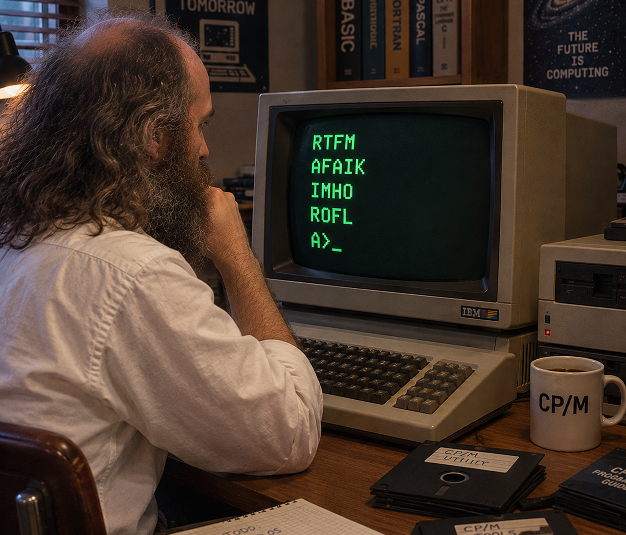

Acrónimos
September 13, 2026 | ES Ver en LinkedIn
 Miguel García
Miguel García
Echo de menos los acrónimos. El IMHO, AFAIK, BTW y toda la tropa.
¡Cuánto echo de menos el IMHO!
¿Cuál? Que diría una excompañera de trabajo (de Valladolid, para más señas).
¿Lo qué? Que diría el Manolo.
Pues echo de menos el IMHO, sí, el In My Humble Opinion con el que comenzaban muchos textos, allá por los años 70, 80 y 90.
Alguno se lee todavía de vez en cuando, pero es más raro que una lavadora sin IA.
En la era de los dinosaurios informáticos, que tuve la inmensa suerte de rozar, cada byte contaba. Y mucho. Y por varios motivos.
Uno, la memoria, escasa entonces. Había sistemas con RAM de 1K, 2K, 16K, 32K... y si tenías 64K parecía casi ciencia ficción.
Mi primer ordenador tenía 256K de RAM, con trampa: 64K para el programa, otros 64K para el sistema operativo, y los restantes 128K para un disco RAM.
Sí, sí, el programa. Uno. El que estuviera en memoria. El resto, quietecitos hasta que os llamen. Y de uno en uno, nada de amontonarse.
En segundo lugar, el almacenamiento permanente (era temporal, más bien).
Un disco flexible de la época, por ejemplo, podía almacenar 128K dependiendo del formato. Los había con más capacidad, otros con menos.
En cuanto a ancho de banda, por llamarle de alguna forma, un tanto de lo mismo. En mis mejores tiempos tuve un modem de 64 kbps. El anterior, uno de 56 kbps, se fundió un día de verano y mucho Internet conectado a la línea telefónica. La suegra: el teléfono siempre comunica. La hija de la suegra: es Miguel, que está mirando no se qué en Internet.
Corría el año 1998 y aquello era lo más. Lo más lento y lo más caro.
Con esas velocidades de vértigo, había incluso que evitar páginas web con muchas imágenes, taza de tila al lado. Y las hechas con Flash, ni mentarlas.
Así pues, tocaba economizar. Si podías escribir una frase en un palabro, pues se hacía.
Esos palabros se llaman acrónimos.
¿Te suena el LOL? Pues eso, Laughing Out Loud.
Mescojono viene a ser lo mismo, pero en voz alta. Pero no es un acrónimo.
Ahí van unos cuantos más:
- AFAIK -> As Far As I Know (va de la mano del IMHO por lo de la hache)
- IMO -> In My Opinion (cuando no vas de humble por la vida)
- IIRC -> If I Recall Correctly (que me voy haciendo mayor)
- ROFL -> Rolling On Floor Laughing (me parto, tienes unas cosas...)
- OMG -> Oh My God (lo que hay que leer)
- BTW -> By The Way (que me acabo de acordar de una cosa)
- FYI -> For Your Information (que lo sepas)
- OT -> Off Topic (muy leído en foros y listas de mensajes)
- RTFM -> Read The F***ing Manual (el inicio de tantas amistades efímeras)
- TIA -> Thanks In Advance (gente educada también la hay)
- WTF -> What The F*** (gente que no entra en el apartado anterior)
BTW, hoy he visto Pesadilla en la cocina, y Chicote suelta en determinado momento:
- ¡Qué poco respeto al oficio!
IMHO, es extensible en ocasiones al mío.
Es OT, pero tenía que decirlo.
ROFL.
OMG, si hasta ya le decimos a la IA aquello de RTFM.
LOL.
Más ROFL.
TIA.

Créditos imagen: ChatGPT y las tonterías que uno le ha dicho.